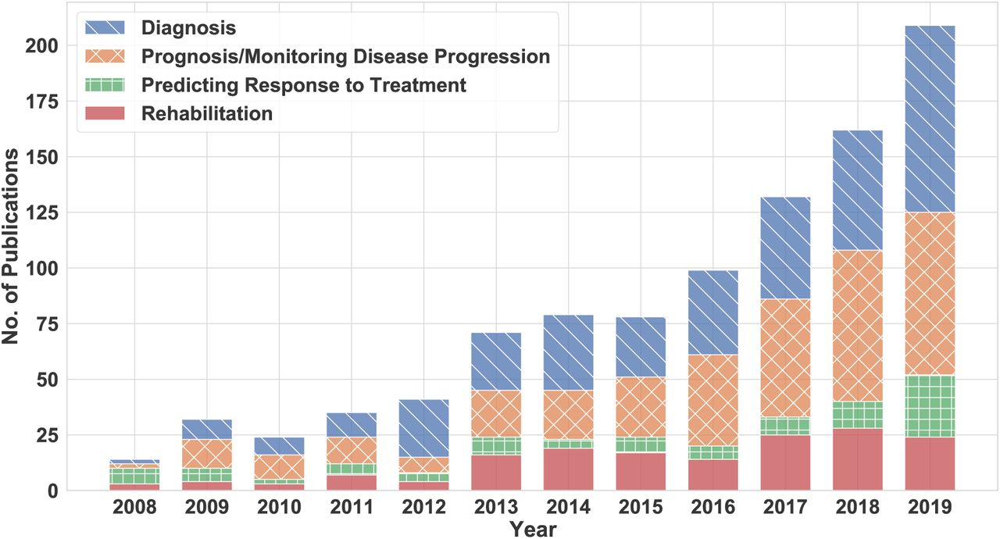

This paper will give an overview of the use of wearable technology in the medical profession.
Wearable technology is a health monitoring device and has the potential to provide people with
more advanced information and continuous medical data in real time regarding their health,
helping people to make better choices with their lifestyle, diagnosis and treatment.
Introduction
To what extent will wearable technology aid in early detection of illnesses?
Wearable Technology has the capabilities to transform the way we diagnose diseases and
illnesses, and prognosis of a disease through intervention from an early stage, providing a cost-
effective solution through means of prediction and prevention of a disease effectively before it
progresses to later stages of the disease where it requires more medical care and treatment.
Wearable Technology include wearable sensors which are capable of measuring physiological
signs such as electrocardiogram (ECG), electromyogram (EMG), heart rate (HR), body
temperature, electrodermal activity (EDA), arterial oxygen saturation (SpO2), blood pressure
(BP) and respiration rate (RR)(Pantelopoulos and Bourbakis, 2010; Nemati, Deen and Mondal, 2012
as cited in Majumder, Mondal and Deen, 2017).They can be comfortably placed on the epidermis, inserted
through the skin or body orifices for measuring electrophysiological or biochemical signals, and
delivering drugs(Khan et al, 2016 as cited in Yetisen et al, 2018). Such technologies when incorporated
in garments, accessories, or epidermal surface to provide electronic alerts, sense physical and biochemical
information, or deliver drugs are broadly called medical wearables (Zeng et al, 2014; Yetisen et al, 2016
as cited in Yetisen et al, 2018).
Wearable devices have pattern recognition features so they can spot connections to various
diseases, which can then be further analysed to produce a more accurate diagnosis. It also gives
continuous real-time data, so if any abnormalities or problems arise in an individual body, it can
be quickly and effectively detected. It is especially important and useful for our increasingly
elderly generation because it reduces their consistent visits and difficulties going to clinics and
hospital due to their old age where mobility might be an issue, so wearable devices offer a
great solution to that problem since their health can be continuously monitored from the comfort of their homes.
Analysis and discussion
We will study an article where it discusses how wearables devices can be used for early
detection of Parkinson’s disease which affects a big proportion our elderly generation.
Parkinson’s disease (PD) is one of the fastest growing neurodegenerative disorders,
and it has reached epidemic sizes (Dorsey et al, 2018 as cited in Shcherbak et al, 2013).
The reducing of dopamine in the central nervous system causing chronic and progressive destruction
of dopaminergic neurons currently is known as the reason for this disease (Coelho et al, 2023;
Aouraghe, Khaissidi and Mrabti, 2022 as cited in Shcherbak et al, 2013). Currently, there are no
cures for PD. However, there are ways of suppressing symptoms and helping patients have a
better quality of life as much as possible (Rees et al, 2018 as cited in Shcherbak et al, 2013).
Early diagnosis is important because some studies have shown that therapies, both medicinal
and nonpharmacological, have higher effectiveness during the early stages of the disease
(Pagan, 2012 as cited in Shcherbak et al, 2013). One of the main purposes of early diagnosis is
to prolong the time of higher quality of life of the patient (Ugrumov, 2020 as cited in Shcerbak
et al, 2013). In addition, the majority of the costs associated with PD are usually in the later
stages of the disease, so an early intervention can lower the overall cost by delaying the onset of
symptom severity (Tinelli, Kanavos and Grimaccia, 2016 as cited in Shcherbak et al, 2013).
Wearable devices offer the potential to track motor symptoms in neurological disorders (Sotirakis et al, 2023).
Kinematic data used together with machine learning algorithms can accurately identify people living
with movement disorders and the severity of their motor symptoms (Sotirakis et al, 2023). The experiment
involved 74 patients who visited the lab seven times in a 3-month interval (Sotirakis et al, 2023).
Their walking (2-minutes) and postural sway (30-seconds, eyes-closed) were recorded using six Inertial
Measurement Unit sensors (Sotirakis et al, 2023). The portability and affordability of wearable
sensors make it possible to assess the spatio-temporal features of walking and balance in the
laboratory or clinic, and remotely at the comfort of patients’ homes (Sotirakis et al, 2023).
The experiment showed impressive results because it identified motor symptom progression
as early as 15 months after baseline, while the traditional clinical rating scale did not
capture these signs of progression by the end of the period studied (Sotirakis et al, 2023).
Furthermore, foot strike angle decreased from one visit to the next suggesting
that foot pitch angle decreases as a function of disease duration, rendering patients
increasingly prone to trips and falls (Sotirakis et al, 2023). A lower foot strike angle has
been shown to be a discriminative characteristic of PD and a marker of disease severity
(Sotirakis et al, 2023). Kinematic features collected by wearable devices and analysed using a
well-known Machine learning algorithm can prove early signs of PD motor symptom progression,
enabling the assessment of the effectiveness of medical treatment (Sotirakis et al, 2023).
Figure 1:

References
Majmuder, S., Mondal, T., and Deen, M. J. (2017) ‘Wearable Sensors for Remote Health Monitoring’,
Sensors (Basel), PMID: 28085085. Available at: 10.3390/s17010130
Yetisen, A. K., Martinez-Hurtado, J. L., Ünal, B., Khademhosseini, A., and Butt, H.
(2018) ‘Wearables in Medicine’, Advanced materials (Weinheim), p.30. Available at: 10.1002/adma.201706910
Shcerbak, A., Kovalenko, E., and Somov, A. (2023) ‘Detection and Classification
of Early Stages of Parkinson’s Disease Through Wearable Sensors and Machine Learning’,
IEEE transactions on instruments and measurement, Vol.72, p.1-1. Available at: 10.1109/TIM.2023.3284944
Sotirakis, C., Su, Z., Brzezicki, M. A., Conway, N., Tarassenko, L., FitzGerald, J. J.,
and Antoniades, C. A. (2023) ‘Identification of motor progression in Parkinson’s disease
using wearable sensors and machine learning’, npj parkinson’s disease, article number 142.
Available at: https://doi.org/10.1038/s41531-023-00581-2